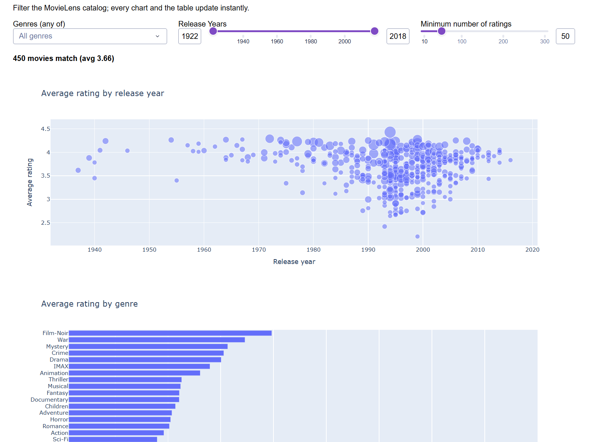
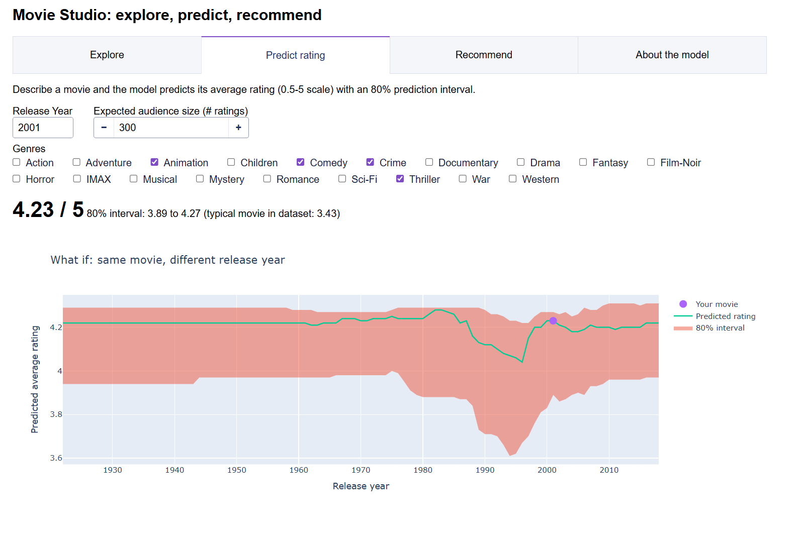

🎬 Movie Studio
An end-to-end data product on MovieLens: predict a movie's rating with a calibrated 80% interval, and recommend similar movies with item-based collaborative filtering.
What it does
Explore
Filter ~9,700 movies by genre, year, and popularity with live charts.
Predict
Gradient boosting + quantile regression gives a rating and an 80% interval, with a what-if curve over release year.
Recommend
User-centered, shrinkage-adjusted item-item similarity on sparse matrices.
Serve
Same core layer behind a Dash dashboard and a validated FastAPI service.
Screenshots


Results
Add the tables from docs/RESULTS.md here after running python evaluate.py on the real dataset.
Engineering
- Hold-out evaluation that rebuilds similarities without the hidden rating (no leakage), compared against a popularity baseline
- Interval coverage measured, not assumed; baselines: mean, ridge, random forest
- 16 offline tests, GitHub Actions CI, Dockerfile with non-root user and health check
Stack
Python · pandas · NumPy · SciPy (sparse) · scikit-learn · Plotly Dash · FastAPI · pytest · Docker · GitHub Actions